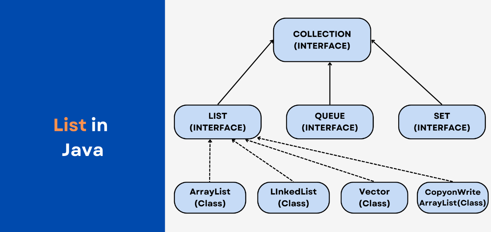

Урок 1: Списки (List)
Введение
В Java, интерфейс List является частью коллекций и представляет собой упорядоченную коллекцию, которая хранит элементы в определенном порядке и позволяет работать с ними по индексам.
В отличие от других коллекций, таких как Set, элементы в List могут быть дублированными, и порядок их хранения сохраняется.
Основные особенности списка List:
- Упорядоченность: Порядок элементов в списке сохраняется в том виде, в котором они были добавлены. Элементы могут быть доступны по индексу, начиная с 0.
- Дублирование: В List могут содержаться дублирующиеся элементы, в отличие от коллекций типа Set, где все элементы уникальны.
- Индексация: В List можно получить элемент по индексу, изменять его или удалять.
- Универсальность: List может быть реализован различными классами, такими как ArrayList, LinkedList, Vector, и каждый из них имеет свои особенности и преимущества в разных сценариях.
Реализации списка List:
- ArrayList - наиболее распространенная реализация списка, основанная на динамическом массиве.
- LinkedList - реализация списка, основанная на двусвязном списке.
- Vector - тарый класс, похожий на ArrayList, но с дополнительной функциональностью синхронизации.
- Stack - наследник Vector, который реализует структуру данных "стек" (LIFO — Last In, First Out).
Особенности и различия между реализациями List:
| Реализация | Особенности | Время работы основных операций |
|---|---|---|
| ArrayList | Динамический массив, быстрый доступ по индексу. | Добавление/удаление в конец — O(1); в середину — O(n); доступ — O(1) |
| LinkedList | Двусвязный список, быстрые вставка/удаление в середине и в начале списка. | Вставка/удаление — O(1); доступ по индексу — O(n) |
| Vector | Синхронизированный список, но менее эффективен из-за синхронизации. | Операции аналогичны ArrayList, но с накладными расходами на синхронизацию |
| Stack | Реализация структуры данных "стек". | Операции добавления/удаления — O(1) |
Заключение
List — это мощный и гибкий интерфейс для работы с упорядоченными коллекциями. Он предоставляет множество методов для добавления, удаления, поиска и замены элементов, а также для эффективной работы с индексами. Реализация списка зависит от конкретных требований к производительности и особенностей работы с данными.